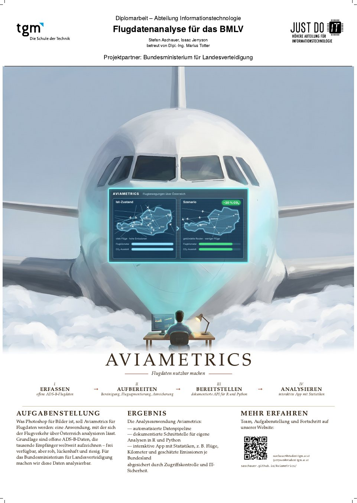

Website online & Projektplakat eingereicht
Projektplakat im Format DIN A1 gestaltet und eingereicht; diese Website informiert ab sofort laufend über den Projektstand.
Über Österreich sind täglich tausende Flugzeuge unterwegs. Fast alle senden per ADS-B laufend ihre Position, Höhe und Geschwindigkeit. Weltweit zeichnen freiwillige Empfänger diese Signale auf und stellen sie offen zur Verfügung: ein riesiger Datenschatz, aber roh, lückenhaft und ohne Werkzeuge kaum nutzbar.
Für das Bundesministerium für Landesverteidigung (BMLV) entwickeln wir eine Anwendung, mit der sich diese offenen Flugdaten erfassen, aufbereiten und analysieren lassen – von der einzelnen Flugbewegung bis zur Statistik je Bundesland.
„Von den ersten Gleitflügen Otto Lilienthals bis zu Millionen Positionsmeldungen am Tag: Wir machen sichtbar, was über unseren Köpfen passiert.“
Die Daten durchlaufen vier Stufen. Jede Stufe ist ein eigener, nachvollziehbarer Schritt – so lassen sich Ergebnisse jederzeit reproduzieren und neue Analysen einfach ergänzen.
Täglicher Import offener ADS-B-Daten, z. B. aus den Archiven von adsb.lol und OpenSky.
Bereinigung fehlerhafter Positionen, Zerlegung in einzelne Flüge, Zuordnung zu Bundesländern.
Spaltenorientierte Speicherung und eine dokumentierte API für Analysen in R und Python.
Interaktive App: Flüge, Flugkilometer und geschätzte Emissionen je Bundesland.
Technologie-Stack Stand Oktober 2026 – die endgültige Auswahl folgt aus unserer Machbarkeitsstudie.
Am Ende steht eine einsatzbereite, abgesicherte Plattform, die das BMLV mit eigenen Fragestellungen und eigenen Algorithmen weiterverwenden kann.
Holt, bereinigt und strukturiert die Flugdaten selbstständig – täglich und nachvollziehbar.
Analysealgorithmen in R und Python greifen über eine offen beschriebene API auf die Daten zu.
Karten und Statistiken, z. B. Flüge, Flugkilometer und geschätzte Emissionen je Bundesland.
Abgesichert durch Anmeldung, rollenbasierte Berechtigungen und eine abschließende Sicherheitsüberprüfung.
Projektplakat im Format DIN A1 gestaltet und eingereicht; diese Website informiert ab sofort laufend über den Projektstand.
Ablauf von der Erfassung bis zur Visualisierung definiert: automatisierter Import, Speicherung im spaltenorientierten Format Parquet, Transformationen und eine interaktive Oberfläche. Erste Analysen geplant: Flüge und Flugkilometer je Bundesland sowie ein Emissions-Näherungswert je Flugzeugtyp.
Logo- und Gestaltungskonzepte rund um Otto Lilienthal, den Pionier des Gleitflugs, entwickelt.
ADS-B-Datenformat analysiert und Quellen wie ADS-B Exchange, adsb.lol und das OpenSky Network nach Datenstruktur, Umfang und Lizenz verglichen. Erste Überlegungen zur geografischen Zuordnung von Positionen (Land, Bundesland, Stadt).
Systematische Darstellung bestehender Technologien: Pipeline-Orchestrierung, Datenspeicherung, Abfrage-Engines, Schnittstellen und Visualisierung sowie Frontend, Zugriffskontrolle und IT-Sicherheit.
Die Kooperationsvereinbarung mit dem Bundesministerium für Landesverteidigung tritt in Kraft – Projektstart.
Zwei Schüler der Abteilung Informationstechnologie am TGM – Die Schule der Technik, Jahrgang 5BHIT.
Systemarchitektur, Datenpipeline und Analyseschnittstelle. Schwerpunkt Data Science.
✉ saschauer@student.tgm.ac.atSystemumsetzung, Zugriffskontrolle und IT-Sicherheit der Analyseplattform. Schwerpunkt IT-Security.
✉ ijerryson@student.tgm.ac.at
Wir freuen uns über Nachrichten – ob zur Technik, zu den Daten oder zu einer möglichen Zusammenarbeit.